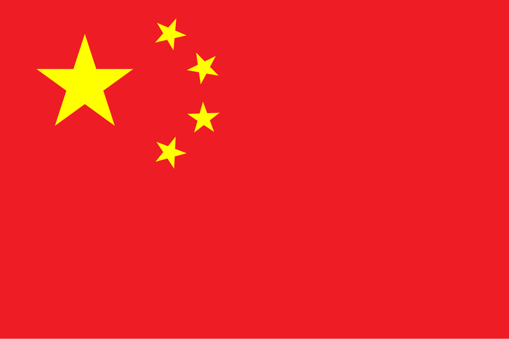

The Silk Road was an ancient network of trade routes connecting China to the West, facilitating the exchange of goods, cultures, and ideas that shaped civilizations across Asia and Europe. For centuries, merchants and travelers journeyed these routes, bringing with them treasures, traditions, and innovations that transformed the world.
Discover Ancient China: 5,000 Years of Civilization
Journey through one of humanity's oldest continuous civilizations
Welcome to an immersive journey through one of the world's oldest continuous civilizations. China's rich history spans millennia, from legendary dynasties to groundbreaking innovations that shaped our modern world.
Explore the fascinating story of a nation that gave us silk, tea, gunpowder, and the compass. Discover the rise and fall of mighty emperors, the cultural treasures that defined entire eras, and the ancient trade routes that connected East and West.
What You'll Discover
"A journey of a thousand miles begins with a single step" - Lao Tzu
What You'll Discover
"A journey of a thousand miles begins with a single step" - Lao Tzu
2100 BCE
First recorded dynasty, mostly legendary.
1600 BCE
First confirmed Chinese dynasty with archaeological evidence.
1046 BCE
Longest dynasty in Chinese history, split into Western and Eastern Zhou.
256 BCE
End of Zhou; marks the rise of Qin.
206 BCE
Golden age of Chinese civilization, science, and trade.
220 CE
Wei, Shu, and Wu fought for control after Han collapsed.
280 CE
Brief unification after Three Kingdoms; ended in civil war.
581 CE
Short-lived but reunified China and built the Grand Canal.
618 CE
A cultural high point in art, poetry, and trade along the Silk Road.
907 CE
Fragmented short dynasties after the Tang collapse.
960 CE
Technological and economic advancements; divided into Northern and Southern Song.
1279 CE
Founded by Kublai Khan; first foreign-led dynasty of China.
1368 CE
Restored Han Chinese rule; built much of the Great Wall seen today.
1644 CE
Last imperial dynasty; ruled by the Manchus.
1912 CE
Monarchy abolished; leads into modern history.
Present
What Makes a Dynasty
A dynasty is a hereditary system where imperial power passes through family lines, often lasting centuries. Chinese dynasties claimed legitimacy through the Mandate of Heaven-divine authorization to rule. When a new family seized power, they declared the previous dynasty had lost this celestial blessing.
Each dynasty created its own government, appointed officials, established laws, and built administrative systems to govern China's vast territories. They minted coins, constructed capital cities, and developed court rituals that reinforced the emperor's absolute authority. Success required military strength, sound economic policies, and the ability to maintain loyalty across generations.
Rise and Fall of Dynasties
Chinese dynasties follow a predictable cycle: rise through conquest or rebellion, enjoy prosperity and expansion, then gradually weaken before collapse. New dynasties emerged during chaos, when strong leaders united fragmented territories, promising stability.
However, even mighty dynasties eventually succumbed to internal decay. Official corruption, excessive taxation, and imperial extravagance drained resources. Natural disasters, costly wars, and rebellions weakened central authority. As control slipped, regional warlords gained power, borders became vulnerable, and people lost faith in their rulers. This created perfect conditions for rivals to claim the Mandate of Heaven, beginning the cycle anew.
4 Great Inventions of Ancient China
Compass
The compass was invented during the Han Dynasty. It revolutionized navigation and enabled open-sea exploration long before it reached Europe.
Gunpowder
Discovered during the Tang Dynasty, gunpowder changed warfare forever. It led to the invention of fireworks, cannons, and eventually modern firearms.
Papermaking
Invented by Cai Lun in the Eastern Han Dynasty, papermaking revolutionized communication, education, and the spread of knowledge worldwide.
Printing
Woodblock printing emerged during the Tang Dynasty, followed by movable type in the Song Dynasty. It transformed the availability of books and literacy.
2. Select all that are part of the Great Inventions:
4. Which dynasty saw the discovery of gunpowder?
Below is an interactive menu where you can explore six key regions of the Silk Road - China, India, Persia, Uzbekistan, Turkey, and Italy. Navigate through each area (using buttons or A/D) to discover what goods they exported and the rich cultures they contributed to this historic network.

China
1. Traditional Clothing (Hanfu): Long flowing robes with wide sleeves and belts, worn in various dynasties (especially Han and Tang). Clothing signified social status, gender, and roles.
2. Food & Tea Culture: Staples included rice, millet, vegetables, duck, and pork. Tea was central — both as a daily drink and in ceremonies. Dumplings, noodles, and congee trace back to ancient times.
3. Calligraphy and Writing: Artistic writing using brush, ink, and paper. Chinese characters (hanzi) evolved from ancient scripts like oracle bones and seal script.
4. Festivals: Major festivals include Lantern Festival, Mid-Autumn Festival, Dragon Boat Festival, and Spring Festival (Lunar New Year). Celebrations included dances, firecrackers, poetry, and moon worship.
5. Music & Instruments: Traditional instruments such as guzheng (zither), erhu (two-string violin), dizi (flute), and pipa (lute). Music was important in courts, ceremonies, and storytelling.
6. Martial Arts / Fighting: Ancient Chinese martial arts (kung fu/wushu) combined physical skill, philosophy, and self-discipline. Styles varied widely, influencing combat, health, and spiritual practice.